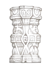
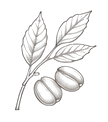
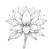
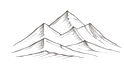

Brand identity.
Building visual languages rather than isolated logos.
Professional snapshot
Senior Brand & UX Designer based in Bengaluru, working across brand strategy, identity systems and digital experiences. I lead projects from problem framing and stakeholder alignment through visual direction, execution and delivery.
Place I belong
I grew up in Hassan, Karnataka, surrounded by Hoysala architecture, stone craftsmanship, coffee estates and a culture shaped by patience and detail.

Detail carved into stone.

02Craftsmanship that rewards patience.

03A landscape where nothing is rushed.

04A sense of warmth and community.

05Hills, forests and open space.
“Growing up surrounded by art, stories carved in stone, and the aroma of coffee in the hills, I was always drawn to art, form and design.”
Hassan wasn't a design town. But it respected precision and patience in equal measure, and that stayed with me longer than I realized. See how it shapes the work ↓
The pivot
The plan was never graphic design. It was animation. I wanted to build worlds that moved.
But along the way I discovered something I was naturally good at: figuring out why something wasn't working and fixing it.
Graphic design became the bridge between creativity and problem solving.
How I think
Hassan taught me that nothing good gets forced.
Every detail has a reason. Every choice should solve something. Every system should work beyond the first screen.
Branding is not decoration. It is a series of small decisions that eventually make something feel inevitable.
The résumé version
Graphic Designer II
Jul 2026 — Present
Leading brand identity across UI/UX and marketing touchpoints; managing international client engagements end-to-end.
Marketing Graphic Designer
Jul 2023 — Dec 2024
End-to-end campaign creative; partner initiatives with Microsoft & Logitech.
Creative Associate
Oct 2019 — Mar 2023
Collaborated with Disney & Osmo on educational products; mentored junior designers.
Diploma, Graphic & Web Design
2017 — 2019
C-TECH Higher GWD. The foundation for everything after.
Across print, digital and motion, working primarily in Figma and Adobe Creative Suite, always with a systems-level eye toward keeping a brand cohesive across every touchpoint.
What I bring
Building visual languages rather than isolated logos.
Creating consistency across multiple touchpoints.
Turning complex workflows and brand thinking into clear digital experiences.
Aligning stakeholders, critique and execution around a coherent design direction.
Off the record